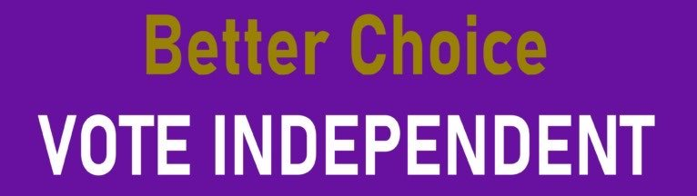

Our aim is to bring change to Lebanon by educating the Lebanese population on the importance of civic engagement and why change is needed now more than ever.
Our Voice Our Right Our Vote Our Country
Who we are
We are independent students at the American University of Beirut who have created this platform to bring real change to Lebanon by increasing Civic Engagement.
Why Vote:

Now is the best time to engage in civic engagement especially
voting with parliamentary elections coming in less than a year.
Its time to bring an effective and competent leadership in Lebanon
and the only way to do that is by voting in the upcoming elections.
Voting is a very important part of any democracy. By voting,
citizens are participating in the democratic process. Citizens vote for
leaders to represent them and their ideas, and the leaders support the citizens' interests.
It is a way to get their voices heard.
Lebanon is country that has been through
countless wars both internal and external. But the
biggest problem it faces is within specifically its elite
corrupt political class. The people in power have
been in power for decades and some of them have given their sons their reigns of power
These corrupt sectarian leaders have led the country to the brink of collapse
On October 17 we saw millions take to the streets demanding the resignation of the President
and the government and calling for early parliamentary elections.
Below are some of the reasons to vote in the upcoming elections.
To start Lebanon is currently facing an economic crisis similar to that of Venezuela with the Lebanese Lira losing more than 90%
of its value
Second, Lebanon is facing the aftermath of an explosion in the Beirut port that is one of the biggest non-nuclear explosions in history
that left 200 dead, thousands injured and at least 150,000 homeless all because of neglect and carelessness of explosions.
Third Lebanon is facing deep sectarian divisions among the population that were created by the Corrupt political elite in order to keep
population under control. This as created hatred among the Lebanese population rather than unity.
Fourth, Lebanon is facing huge levels of corruption using clientelism. This method has helped them get elected and stay in power for so long. It is most common during the election period.
Fifth, Lebanon is facing power cuts that occur at least 8 hours a day sometimes longer.
Along with the lack of water at home. People are obliged to buy water for their homes and obliging people who need electricity
to buy amperes from a local politically affiliated person in their neighborhood in order to have electricity at homes
How to check if you are registered to vote.
Follow these steps to know if you are eligible to vote and to review your details on the lists:
1. Go to the Electoral Lists page on the DGCS website,
here
2.Select the required details using the drop-down lists (governorate, district,
village/neighborhood, gender, sect, and civil registry number). These details can
be found on your identification documents (national ID or passport).
3.Click Search.
4.Search for your name in the resulting list. If it is there,
you are eligible to vote. Make sure to check the details for any errors or misspellings.
5.Alternatively, you can enter your national ID number
(0000xxxxxxxx) in the dedicated field and click Search
to view your details individually, instead of searching through your locality’s list.
In case you find a mistake, you can report it to the
DGCS by downloading and filling a correction-request form, then
submitting it to your civil registration office, or to the Lebanese embassy or consulate if you live abroad.
Here are the names of some alternative secular political parties to vote for in the upcoming 2022 parliamentary election

Beirut Madinati
Citizens in a State
LiHaqqi
Minteshreen
National Bloc
Taqaddomn